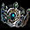
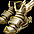

幸運度テスト
幸運度テスト
ランディスの幸運くじ 出現アイテム
新・幸運度テスト
ジェーソンの大事なもの
ギルドダンジョンなどで入手できるタティリス遺跡のかけらや錬成関連アイテムの発火石・断熱石を使って
古都ブルンネンシュティグ / ランディス（110.58）とギャンブルができます。

幸運度テスト
(2)幸運度テストを受ける。を選択して開始
1回につき、タティリス遺跡のかけら5個が必要。

* 1回勝利：神秘の石のかけら3個
* 2回勝利：神秘の石のかけら6個
* 3回勝利：ランディスの幸運くじ
※ジャンケン勝負に勝った時、稀に大当たりプレゼントとして神秘の石のかけら50個を獲得できます。(0.5%程度)
ランディスの幸運くじは交換することでポーションなどの様々なアイテムと交換可能。NPC売却可能。
3連続で勝利できる確率は13%程度。
(通常のジャンケンの3連勝である12.5%より少し高めなのは、大当たりの0.5%が含まれているため。)
ランディスの幸運くじ 出現アイテム

各種イベントや幸運度テストなどで入手可能。
重ね置きは10個まで。出現アイテム、および出現率は以下の通り。
試行回数：1000回以上
| ランディスの幸運くじ 出現アイテム | |||
|---|---|---|---|
| アイテム | 入手率(%) | 説明 | |
| 改良型 デラックスヒールポーション 10個 | 91% | HPを 600ポイント回復 | |
|  |
修復済みタティリス 遺跡の出土品 |
2.5% | 古代都市タティリスの遺跡で出土した貴重な品で、現代の技術力よりも優れた技術力で造られた物のようだ。 ギルドホールの考古学者グランに渡すと古代都市タティリスの遺跡入場券や出土品と交換できる |
| 神秘の石 | 2.5% | 古代都市タティリスの力が封じ込められている神秘的な石で、強烈なエネルギーを発している。 ギルドホールにいる考古学者グラン、古美術商ネネに渡すと様々なアイテムと交換してくれる。 ※ 古代都市タティリスの遺跡で入手できる他、ユニーク以上のアイテム分解でも入手可能 |
|
| 結晶石 | 1% | タティリス秘伝の破壊の力で、ユニークアイテムを分解した時に、稀に取り出すことができる美しい石で、 古代タティリス人は‘魂が宿る石’という意味で‘ソウルストーン’とも呼んでいたらしい。 ※ ユニークアイテムを分解することで入手可能 |
|
| タティリスの未来 (タティリスの栄光) |
1% | 風 抵抗 +1％ 運 +15 ダメージ +5％ 回避率 +1％ |
|
|
タティリスの希望 (タティリスの栄光) |
1% | クリティカル +10％ カリスマ +50 力 +50 知識 +50 |
|
|
タティリスの願い (タティリスの栄光) |
1% | 防御力 +5 スタックアイテム 6個 ダメージ +25％ 防御力 +25％ 最大CP +15％ |
|
※セットアイテム タティリスの栄光
新・幸運度テスト
(1)新・幸運度テストを受けるを選択すると開始。


発火石か、断熱石5個を賭けてスタート。

コインの表裏を当てる勝負。

1勝すると10個を受け取って終了するか、続けるかを選択できます。

2勝すると20個を受け取って終了するか、続けるかを選択できます。

3勝すると40個を受け取って終了するか、続けるかを選択できます。

4勝すると発火石、または断熱石を80個を受け取って終了。
単純に勝率50%とすると、期待値は各回ごとに以下の通りプラス収支。(条件付き確率のため)
1回目：2.5個、2回目：5個、3回目：10個、4回目：20個
ジェーソンの大事なもの
(5)[炎の石]を出す。
(6)[黒き炎の欠片]を出す。を選択して開始
炎の石1個、または黒き炎の欠片10個で、ジェーソンの大事な物をランダムで獲得。
炎の石で交換した場合のみ、稀に少女のトイクラウンをもらえます。
| ジェーソンの大事な物 出現アイテム | ||
|---|---|---|
| アイテム | 説明 | |
| 改良型 デラックスヒールポーション 10個 | HPを 600ポイント回復 | |
| ミュータントフラワー 20個 | 取引不可アイテム HP回復 80ポイント CP充填 80ポイント |
|
| 活力の霊薬 | 取引不可アイテム HPを 1000ポイント回復 CPを 1000ポイント充填 すべての状態異常の治療 |
|
| 神秘の石 | 古代都市タティリスの力が封じ込められている神秘的な石で、強烈なエネルギーを発している。ギルドホールにいる考古学者グラン、古美術商ネネに渡すと様々なアイテムと交換してくれる。 ※ 古代都市タティリスの遺跡で入手できる他、ユニーク以上のアイテム分解でも入手可能 |
|
| 結晶石 | タティリス秘伝の破壊の力で、ユニークアイテムを分解した時に、稀に取り出すことができる美しい石で、古代タティリス人は‘魂が宿る石’という意味で‘ソウルストーン’とも呼んでいたらしい。 ※ ユニークアイテムを分解することで入手可能 |
|
| 疑心暗鬼 | 取引不可アイテム すべてのスキルレベル +1 攻撃速度 +10％ 敵に与えたダメージ 4％を 体力吸収 最大CP +10％ 最大HP +10％ <要求能力値> レベル 100 |
|
| 絶望のリング | すべてのスキルレベル +1 運固定 1 力 +30 武器破壊攻撃 +3％(10秒) 鎧破壊攻撃 +3％(10秒) AI低下攻撃 +3％(10秒) <要求能力値> レベル 100 |
|
|  | ニケの靴 | 攻撃力 1~8 魔法 抵抗 +20％ 集中力 +90 力固定 1 敏捷固定 1 知識固定 1 運固定 1 知恵固定 1 移動速度 +150％ <要求能力値> レベル 100 |
| ジェーソンの革の帽子 | 防御力 +[1~10] 火 抵抗 +30％ 火ダメージ 500～600 火属性攻撃力を10％強化させる。 召喚獣の火属性攻撃力 +10％ ペットの火属性攻撃力 +10％ 火の恩寵 持続時間 +60秒 |
|
| ハーソンのバンダナ | 防御力 +[1~10] 歩行中 CP +10 歩行中 HP +10 移動速度 +10％ DXユニークドロップ確率 5％ 増加 |
|
| 少女のトイクラウン ※炎の石のみ |
防御力 +[1~10] ポーション 回復速度 200％ 増加 魔法アイテムドロップ確率 +50％ ユニークアイテムドロップ確率 +50％ DXユニークドロップ確率 10％ 増加 10％のペット経験値ボーナス 運 +100 アイテム自動リロード |
|
※超低確率で神秘のふいご([S]無し版)も出現するようです。